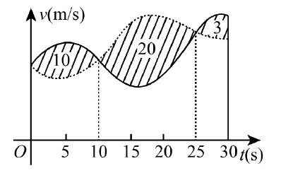

一、选择题(1 ～ 8 小题,每小题 4 分,共 32 分. 下列每题给出的四个选项中,只有一个选项是符合题目要求的,请将所选项前的字母写在题后的括号内. )
-
(1) 若函数 $\displaystyle f(x)= \begin{cases} \dfrac{1-\cos\sqrt{x}}{ax}, & x>0,\\ b, & x\le 0 \end{cases}$ 在 $x=0$ 处连续，则（ ）
-
(2) 设二阶可导函数 $f(x)$ 满足 $\displaystyle f(1)=f(-1)=1,\qquad f(0)=-1,\qquad f''(x)>0,$ 则（ ）
-
(3) 设数列 $\{x_n\}$ 收敛，则（ ）
-
(4) 微分方程 $y''-4y'+8y=e^{2x}(1+\cos2x)$ 的特解可设为 $y^*=$（ ）
-
(5) 设 $f(x,y)$ 具有一阶偏导数，且对任意 $(x,y)$，都有 $\displaystyle \frac{\partial f}{\partial x}>0,\qquad \frac{\partial f}{\partial y}<0,$ 则（ ）
-
(6) 甲、乙两人赛跑。计时开始时，甲在乙前方 $10\mathrm{m}$ 处。图中实线表示甲的速度曲线 $v=v_1(t)$，虚线表示乙的速度曲线 $v=v_2(t)$。三块阴影部分面积的数值依次为 $10,20,3$。计时开始后乙追上甲的时刻记为 $t_0$，则（ ）

-
(7) 设 $\boldsymbol A$ 为三阶矩阵，$\boldsymbol P=(\boldsymbol\alpha_1,\boldsymbol\alpha_2,\boldsymbol\alpha_3)$ 为可逆矩阵，且 $\displaystyle \boldsymbol P^{-1}\boldsymbol A\boldsymbol P= \begin{pmatrix} 0\\ 1\\ 2 \end{pmatrix},$ 则 $\boldsymbol A(\boldsymbol\alpha_1+\boldsymbol\alpha_2+\boldsymbol\alpha_3)=$（ ）
-
(8) 设矩阵 $\displaystyle \boldsymbol A= \begin{pmatrix} 2&0&0\\ 0&2&1\\ 0&0&1 \end{pmatrix},\quad \boldsymbol B= \begin{pmatrix} 2&1&0\\ 0&2&0\\ 0&0&1 \end{pmatrix},\quad \boldsymbol C= \begin{pmatrix} 1&0&0\\ 0&2&0\\ 0&0&2 \end{pmatrix},$ 则（ ）
二、填空题(9 ～ 14 小题,每小题 4 分,共 24 分. 请将答案写在题中的横线上. )
-
(9) 曲线 $\displaystyle y=x\left(1+\arcsin\frac{2}{x}\right)$ 的斜渐近线方程为
-
(10) 设函数 $y=y(x)$ 由参数方程 $\displaystyle \begin{cases} x=t+e^t,\\ y=\sin t \end{cases}$ 确定，则 $\displaystyle \left.\frac{\mathrm{d}^2y}{\mathrm{d}x^2}\right|_{t=0}=$ .
-
(11) $\displaystyle \int_{0}^{+\infty}\frac{\ln(1+x)}{(1+x)^2}\mathrm{d}x=$ .
-
(12) 设函数 $f(x,y)$ 具有一阶连续偏导数，且 $\displaystyle \mathrm{d}f(x,y)=ye^y\mathrm{d}x+x(1+y)e^y\mathrm{d}y,\qquad f(0,0)=0,$ 则 $f(x,y)=$
-
(13) $\displaystyle \int_0^1\mathrm{d}y\int_y^1\frac{\tan x}{x}\mathrm{d}x=$ .
-
(14) 设矩阵 $\displaystyle \boldsymbol A= \begin{pmatrix} 4&1&-2\\ 1&2&a\\ 3&1&-1 \end{pmatrix}$ 的一个特征向量为 $\displaystyle \begin{pmatrix} 1\\ 1\\ 2 \end{pmatrix},$ 则 $a=$
三、解答题(15 ～ 23 小题,共 94 分. 解答应写出文字说明、证明过程或演算步骤. )
-
(15) (本题满分 10 分)
求极限 $\displaystyle \lim\limits_{x\to0^+} \frac{\displaystyle\int_0^x\sqrt{x-t}e^t\mathrm{d}t}{\sqrt{x^3}}.$
-
(16) (本题满分 10 分)
设函数 $f(u,v)$ 具有二阶连续偏导数， $\displaystyle y=f(e^x,\cos x),$ 求 $\displaystyle \left.\frac{\mathrm{d}y}{\mathrm{d}x}\right|_{x=0}, \qquad \left.\frac{\mathrm{d}^2y}{\mathrm{d}x^2}\right|_{x=0}.$
-
(17) (本题满分 10 分)
求 $\displaystyle \lim\limits_{n\to\infty}\sum\limits_{k=1}^n\frac{k}{n^2}\ln\left(1+\frac{k}{n}\right).$
-
(18) (本题满分 10 分)
已知函数 $y(x)$ 由方程 $\displaystyle x^3+y^3-3x+3y-2=0$ 确定，求 $y(x)$ 的极值。
-
(19) (本题满分 10 分)
设函数 $f(x)$ 在区间 $[0,1]$ 上具有二阶导数，且 $\displaystyle f(1)>0,\qquad \lim\limits_{x\to0^+}\frac{f(x)}{x}<0.$ 证明：
（1）方程 $f(x)=0$ 在区间 $(0,1)$ 内至少存在一个实根；
（2）方程 $\displaystyle f(x)f''(x)+\left(f'(x)\right)^2=0$ 在区间 $(0,1)$ 内至少存在两个不同实根。
-
(20) (本题满分 11 分)
已知平面区域 $\displaystyle D=\{(x,y)\mid x^2+y^2\le2y\},$ 计算二重积分 $\displaystyle \iint\limits_D(x+1)^2\mathrm{d}x\mathrm{d}y.$
-
(21) (本题满分 11 分)
设 $y(x)$ 是区间 $\left(0,\frac32\right)$ 内的可导函数，且 $y(1)=0$。点 $P$ 是曲线 $L:y=y(x)$ 上任意一点，$L$ 在点 $P$ 处的切线与 $y$ 轴相交于点 $(0,Y_p)$，法线与 $x$ 轴相交于点 $(X_p,0)$。若 $X_p=Y_p$，求 $L$ 上点的坐标 $(x,y)$ 满足的方程。
-
(22) (本题满分 11 分)
设 $3$ 阶矩阵 $\displaystyle \boldsymbol A=(\boldsymbol\alpha_1,\boldsymbol\alpha_2,\boldsymbol\alpha_3)$ 有 $3$ 个不同的特征值，且 $\displaystyle \boldsymbol\alpha_3=\boldsymbol\alpha_1+2\boldsymbol\alpha_2.$ （1）证明：$r(\boldsymbol A)=2$；
（2）若 $\displaystyle \boldsymbol\beta=\boldsymbol\alpha_1+\boldsymbol\alpha_2+\boldsymbol\alpha_3,$ 求方程组 $\boldsymbol A\boldsymbol x=\boldsymbol\beta$ 的通解。
-
(23) (本题满分 11 分)
设二次型 $\displaystyle f(x_1,x_2,x_3) = 2x_1^2-x_2^2+ax_3^2 +2x_1x_2-8x_1x_3+2x_2x_3$ 在正交变换 $\boldsymbol X=\boldsymbol Q\boldsymbol Y$ 下的标准型为 $\displaystyle \lambda_1y_1^2+\lambda_2y_2^2.$ 求 $a$ 的值及一个正交矩阵 $\boldsymbol Q$。